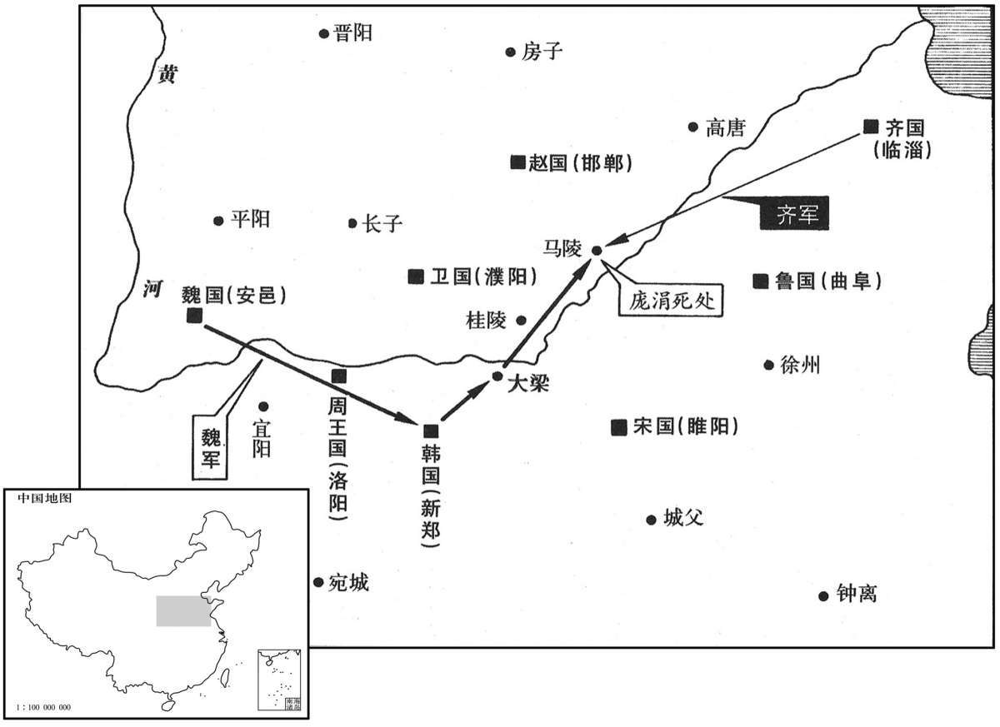

公元前341年资治通鉴：本年记事、原文与白话对照
按原书编年位置阅读；追叙和史论不等于本年发生的事件。白话采用所据译本，缺译不以生成译文补齐。
卷2 · 本年记事
公元前341年 · 显王在位第28年
二十八年〔（庚辰、前三四一）〕
本年事件索引（现代整理）

本年形势与背景参考图
魏庞涓伐韩。韩请救于齐。齐威王召大臣而谋曰：“蚤救孰与晚救？”成侯曰：“不如勿救。”〔邹忌为齐相，封成侯。〕田忌曰：“弗救则韩且折而入于魏，〔折，而设翻。〕不如蚤救之。”孙膑曰：“夫韩、魏之兵未弊而救之。〔膑，频忍翻，又毗宾翻。夫，音扶。〕是吾代韩受魏之兵，顾反听命于韩也。且魏有破国之志，韩见亡，必东面而愬于齐矣。〔见亡，言见有亡国之势也。愬，告愬也。〕吾因深结韩之亲而晚承魏之弊，则可受重利而得尊名也。”王曰：“善。”乃阴许韩使而遣之。〔阴，暗也。使，疏吏翻。〕韩因恃齐。五战不胜，而东委国于齐。
魏国庞涓率军攻打韩国。韩国派人向齐国求救。齐威王召集大臣商议说：“是早救好呢，还是晚救好呢？”成侯邹忌建议：“不如不救。”田忌不同意，说：“我们坐视不管，韩国就会灭亡，被魏国吞并。还是早些出兵救援为好。”孙膑却说：“现在韩国、魏国的军队士气正盛，我们就去救援，是我们代替韩国承受魏国的打击，反而听命于韩国了。这次魏国有吞并韩国的野心，待到韩国感到亡国迫在眉睫，一定会向东再来恳求齐国，那时我们再出兵，既可以加深与韩国的亲密关系，又可以乘魏国军队的疲弊，正是一举两得，名利双收。”齐威王说：“对。”便暗中答应韩国使臣的求救，让他回去，却迟迟不出兵。韩国以为有齐国的支持，便奋力抵抗，但经过五次大战都大败而归，只好把国家的命运寄托在东方齐国身上。
齐因起兵，使田忌、田婴、田盼将之．〔盼，与盻同，音匹苋翻。将，即亮翻；下同。又音如字，领也。〕孙子为师，以救韩，直走魏都。〔走，音奏。〕庞涓闻之，去韩而归。〔庞，薄江翻。涓，工玄翻。〕魏人大发兵，以太子申为将，以御齐师。孙子谓田忌曰：“彼三晋之兵素悍勇而轻齐，〔将，即亮翻。悍，下罕翻，又音汗。〕齐号为怯，善战者因其势而利导之。兵法：『百里而趣利者蹶上将，五十里而趣利者军半至。』”〔此孙武子兵法也。趣，七喻翻。魏武帝曰：蹶，其月翻。蹶，犹挫也。刘氏曰：蹶，犹毙也。半至，谓军趣利前后不相属，半至半不至也。属，陟玉翻。〕乃使齐军入魏地为十万灶，明日为五万灶，又明日为二万灶。庞涓行三日，大喜曰：“我固知齐军怯，入吾地三日，士卒亡者过半矣！”〔过，工禾翻。〕乃弃其步军，〔句断。庞，薄江翻。涓，圭渊翻。〕与其轻锐倍日并行逐之。〔并行，兼程而行也。倍日，一日行两日之程，亦兼程也。〕孙子度其行，暮当至马陵，〔司马彪志：魏郡元城县。注云：左传成七年，会马陵；杜预注，在县东南，庞涓死处。虞喜志林：马陵在濮州鄄城东北六十里，涧谷深，可以置伏。度，徒洛翻。鄄，吉掾翻。〕马陵道陿而旁多阻隘，可伏兵，〔陿，与狭同。隘，乌懈翻。〕乃斫大树，白而书之曰：“庞涓死此树下！”于是令齐师善射者万弩夹道而伏，期日暮见火举而俱发。庞涓果夜到斫木下，见白书，以火烛之，读未毕，万弩俱发，魏师大乱相失。庞涓自知智穷兵败，乃自刭，曰：“遂成竖子之名！”〔庞，薄江翻。涓，工玄翻。刭，古顶翻，断首也；康古定切，非。竖，殊遇翻。说文：竖使布短衣。〕齐因乘胜大破魏师，虏太子申。
齐国这时才出兵，派田忌、田婴、田盼为将军，孙膑为军师，前去援救韩国，仍用老办法，直袭魏国都城。庞涓听说，急忙放弃韩国，回兵国中。魏国集中了全部兵力，派太子申为将军，抵御齐国军队。孙膑对田忌说：“魏、赵、韩那些地方的士兵向来骠悍勇猛，看不起齐国；齐国士兵的名声也确实不佳。善于指挥作战的将军必须因势利导，扬长避短。《孙武兵法》说：‘从一百里外去奔袭会损失上将军，从五十里外去奔袭只有一半军队能到达。’”于是便命令齐国军队进入魏国地界后，做饭修造十万个灶，第二天减为五万个灶，第三天再减为二万个灶。庞涓率兵追击齐军三天，见此情况，大笑着说：“我早就知道齐兵胆小，进入我国三天，士兵已逃散一多半了。”于是丢掉步兵，亲率轻兵精锐日夜兼程追击齐军。孙膑估计魏军的行程当晚将到达马陵。马陵这个地方道路狭窄而多险隘，可以伏下重兵，孙膑便派人刮去一棵大树的树皮，在白树干上书写六个大字：“庞涓死此树下！”再从齐国军队中挑选万名优秀射箭手夹道埋伏，约定天黑后一见有火把亮光就万箭齐发。果然，庞涓在夜里赶到那棵树下，看见白树干上隐约有字，便令人举火照看，还未读完，两边箭如飞蝗，一齐射下，魏军大乱，溃不成军。庞涓自知败势无法挽回，便拔剑自尽，临死前叹息说：“让孙膑这小子成名了！”齐军乘势大破魏军，俘虏了太子申。
成侯邹忌恶田忌，〔邹，以国为氏。恶，乌路翻。〕使人操十金，卜于市，〔操，七刀翻。〕曰。：“我，田忌之人也。我为将三战三胜，欲行事，可乎？”卜者出，因使人执之。田忌不能自明，率其徒攻临淄，〔临淄，齐国都也；城临淄水，因以为名。班志，临淄属齐国。臣瓒曰：临淄，即营丘，太公营之。淄，庄持翻。〕求成侯；不克，出奔楚。〔为下齐复田忌张本。〕
齐国成侯邹忌嫉恨田忌的赫赫战功，便派人拿着十金，去集市上算卦，问道：“我是田忌手下的人，田将军率军作战三战三胜，现在是举行登位大事的时候了吗？”待到算卦人出来，邹忌令人把他抓住，准备以此倾陷田忌。田忌无法洗刷清楚，一气之下率亲丁攻打国都临淄，想抓住邹忌，却不能取胜，只好出逃楚国。